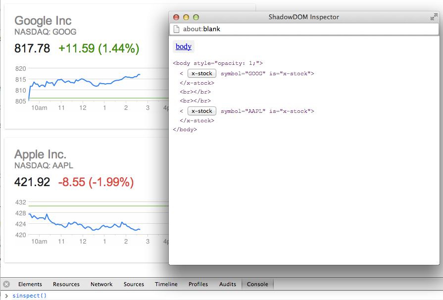

This document lists the notable changes across the entirety of the project, including polyfill repos, tools, projects, and UI elements.
2013-07-11
See the full list of changes.
Polymer
General
All hail <polymer-element>!
Declaring elements is now <polymer-element name="tag-name"> (was <element name="tag-name">).
Elements are now auto registered, so a script tag is no longer required:
<polymer-element name="tag-name">
<template>...</template>
</polymer-element>
Features
More complex elements are registered with Polymer('tag-name', {prototype}) (was Polymer.register(this, {prototype})). This allows for more flexible script decoupling:
<script src>works now<script>can come before or inside the element, but not after
Changes
- Script scope is no longer special (e.g.
thisno longer refers to the element). - Closures are not longer supported for private variables. Private vars should be done with the standard methods like anonymous self calling functions.
Core
- `.resetStyleInheirtance’ can now be defined on the element’s prototype (commit)
- Shadow DOM shhim styling has been moved into platform as
ShadowCSS(commit)
Platform
- Polyfill
<template>/<element>styling not use!important. Fixes #191. - Add
array()andforEach()toNodeList,NamedNodeMap,HTMLCollection(commit)
Custom Elements
- Script execution is more specific to JS (commit)
HTML Imports
- Scripts within
<template>content are now executed. Fixes #22. - Non-JS script tags are no longer parsed (commit)
MDV
- CompoundBindings have been sped up (commit, commit)
- Binds have a more consistent API (commit)
- Initial work on MDV benchmarking (commit)
- Ensure
getInstanceModel()is only called when a new instance will be created. Allows for the common case of inserting an instance via aDocumentFragment(commit)
Pointer Events
- Use ES6
Mapwhere available (commit) allShadows()method added to find all shadow roots (commit)- Handle IE 11 use of string
.pointerType(commit) - Don’t override native
PointerEvent(commit) - Use
shadow.olderShadowRootwhen possible. Fixes #81. - Touch will try to use
touch-actionor use the oldMutationObservermethod (commit)
Shadow DOM
Event.pathalways originates from the target (commit)- Fixed issue where FF24 doesn’t support
document.createEvent('FocusEvent')(commit)
Elements & Projects
polymer-elements
- Added
<polymer-overlay>(commit) - Added
<polymer-key-helper>(commit) - Added
<polymer-file>(commit) - Added
<polymer-animation>elements (commit) - Added
<polymer-media-query>(commit) - Added
<polymer-selector>(commit)
polymer-ui-elements
- Added
<polymer-ui-accordian>(commit) - Added
<polymer-ui-splitter>(commit) - Added responsive design to toolbar (commit)
2013-06-17
Notice: This release contains important changes to the structure of the project.
The repo structure was “flattened” such that platform and polymer repos no
longer contain submodules. Instead, the dependencies need to be checked out as siblings.
For example, platform now expects HTMLImports, CustomElements, PointerEvents, MDV, ShadowDOM, etc. to be siblings. polymer expects to be siblings with all of them. Unless you’re
working directly on Polymer, it’s safe to stick with polymer-all.
Polymer
General
- The Bower component has been updated to reflect this release.
- Polymer-based TodoMVC app (source) was published.
- MDV Expression Syntax is on by default (commit). No changes are necessary for your current usage of templates. New features include support for inline math expressions, named scoping, and more. Read more.
- To reduce memory leaks, elements created 1.) in JavaScript (e.g.
document.createElement('x-foo')) and 2.) not in the DOM will lose their bindings, asynchronously. (commit)- If you want an element to remain active when it’s not in the
document(e.g. it keeps its MDV bindings and*Changedmethods), you must callthis.cancelUnbindAll()after it’s been created or removed. Theready()callback is a good place for creation time. - If you call
cancelUnbindAll()and never put the element back in the DOM, it is your responsibility to eventually callthis.unbindAll()/asyncUnbindAll(). Otherwise, you will leak memory.
- If you want an element to remain active when it’s not in the
Core
- Arrays and Objects are supported as attributes (commit)
- Polyfill support for
:scopeinstead of@host(commit) - Style are correctly applied to type extension custom elements (e.g.
[is="x-foo"]) (commit) - The other lifecycle callbacks (
inserted,removed,attributeChanged) can be setup in thePolymer.register()call in addition toready. Note: these names are shorter than the spec’s API.
Platform
Custom Elements
See the full list of changes.
- Support non-enumerable properties defined on
HTMLElementprototypes (commit) - Boostrap on
DOMContentLoadedinstead ofwindow.load. Go immediately ifdocument.readyState === 'complete'(commit) .constructorreferences correct name defined in<element>’scontructorattribute (commit)- Update to new source map syntax (from
//@to//#) (commit)
HTML Imports
See the full list of changes.
- Loading now kicks off immediately if
document.readyState === 'complete'(commit) - Do not load external stylesheets that are not in
<element>. Also support external stylesheets inside of<template>(commit) - Update to new source map syntax (from
//@to//#) (commit)
MDV
See the full list of changes.
- Support binding to
HTMLSelectElement.selectedIndex(commit) HTMLTemplateElement.createInstance()now takes model & syntax string (e.g.template.createInstance(model, 'MDV')) (commit)- Implement two-way binding to
HTMLTextArea.value(commit) - Named scopes are supported (e.g.
<template repeat="{{item in items}}">) (commit). Read more. - Implement MDV Syntax expressions (commit)
- Allow
<template if="{{expr}}">to be equivalent to<template bind if="{{expr}}">(commit)
Pointer Events
See the full list of changes.
- Split mouse/touch/MS events into their own modules (commit)
- Touches that fall off the screen are handled more gracefull (commit)
Shadow DOM
See the full list of changes.
- Alias
.createShadowRoot()to.webkitCreateShadowRoot()(commit) - Remove
shadowRoot.insertionParentper spec (common) - Implement
event.path(commit)
Elements & Projects
- Added
<polymer-meta>for storing metadata (commit) - Added
<polymer-ui-ratings>(commit) - Added
<polymer-ui-toggle-button>(commit) -
Added
<polymer-ui-tabs>(commit) - Initial work on Polymer Elements Playground
- Added port of Memory Game
2013-06-05
Polymer
See the full list of changes.
asend()is deprecated. Please useasyncFire()instead (commit)asyncMethod()now usesrequestAnimationFrame()if no timeout duration is given (commit)- Support was added for
event.path(commit, commit) - Support for “Polymer” custom MDV syntax (commit, commit, commit)
- More explicit anti-FOUC prevention (commit)
- Process of putting template content into shadowRoots was changed to prevent 404 requests (commit). Fixes #153
Platform
See the full list of changes.
HTML Imports
See the full list of changes.
- Use
DOMContentLoadedinstead ofwindow.onloadto trigger importing (commit) - Added
.status === 0check for imports to work in Cordova and acrossfile://(commit) - Expose
HTMLImports.xhrhook (commit)
Elements & Projects
polymer-elements
- Added
<polymer-page>element (commit) - Added
<polymer-view-source-link>element (commit) - Added
<polymer-localstorage>(commit) - Version of
<polymer-layout>that uses CSS flexbox (commit) - Added
<polymer-ui-sidebar-menu>(formerly known as ribbon) (commit) -
Added
<polymer-ui-icon>example file (commit) - Initial commit of Gallery (commit)
2013-05-15
This release mainly contained important platform fixes for IE and Firefox.
See the full list of changes.
Platform
Custom Elements
HTML Imports
MDV
- Correct event type for checkbox bindings (commit)
HTML Imports
- Only enable cache busting in debug mode (commit)
Shadow DOM
- Fixed #151 -
HTMLLegendElementissue in FF21.
Pointer Events/Gestures
- Fix for
<button>in IE (commit)
2013-05-13
Notice: This release contains important changes to the structure of the project.
Project renamed to Polymer! https://github.com/polymer
2013-05-09
Polymer
See the full list of changes.
-
Project has a build status at http://build.chromium.org/p/client.toolkit/waterfall and tests are being run on Browserstack (commit)
-
Base example components were removed and separated into their own
toolkit-uirepo, while thetoolkit-elementsrepo contains non-visual elements. -
A sandbox tool was added to projects.
Elements and animations
-
New
g-overlayelement with web animations (commit) andg-tabspanel(commit) -
Added
g-fadein,g-fadeoutanimations (commit) andg-shake, a configurable shake animation (commit)
Features & bug fixes
-
Element registration now puts a
.elementElementproperty on the prototpe to reference the<element>(commit) -
pseudo-scoping now works on Firefox and IE where
cssRule.selectorTextis readonly (commit) -
Attributes de-serialization is more predicable. For example, numbers are treated as numbers, srings as strings, dates as
Date, etc. (commit, commit, commit) -
MDV v3 is now turned on by default.
-
Toolkit.getBinding(element, name)no longer generates an exception if element is null [commit)
Platform
Custom Elements
See the full list of changes.
-
Implement life cycle callbacks (inserted|removed|attributeChanged) using MutationObsevers. Note: you can no longer add lifecycle callbacks to a
lifecycleobject. They must be on the prototpye. (commit) -
document.register()only triggers document-wide upgrade when called after initial load is complete (commit) -
document.register()tests were updated to align with spec changes (commit) -
Added support for native
document.webkitRegister()(if available) (commit) -
attributeChangedcallback only fires when attribute has actually been modified (commit) -
<style>elements are now (correctly) ignored if they’re in the main document (commit)
HTML Imports
See the full list of changes
-
HTMLImports.getDocumentUrl()added (commit) -
HTMLImports.readyTimeadded for primative timing data [commit) -
Caching is configurable with
.cache[commit)
MDV
See the full list of changes
-
Now using ChangeSummary v3 (commit)
-
Removed
.effectiveContentAPI (commit) -
Removed
HTMLTemplateElement.bindTreein favor oftemplate.model(commit) -
Exposed
HTMLTemplateElement.parseAndBind_(commit) -
Implemented
.getInstanceModelfor returning the model associated with a template (commit)
Pointer Events / Gestures
See the full list of changes here and here.
-
touch-action: useris an alias fortouch-action: none(commit) -
Fix
pointercapturethrows on IE10 (commit) -
Expose
.clientXY,.pageXY,.screenXYof track gestures. (commit)
Shadow DOM
See the full list of changes
-
Implemented
.querySelector|All()and.getElementById()(commit, commit) -
Implemented
.elementFromPointfordocumentand ShadowRoot (commit) -
Wrapped
MutationRecordinterface now that Blink has it. (commit) -
document.write()is now overriden and wrapped in the polyfill (commit)
2013-04-17
Toolkit
- If you’re writing a Toolkit component, there’s
no longer need to include
platform.jsalongsidetoolkit.js.toolkit.jsnow loadsplatform.jsunder the hood.
Platform
CustomElements
- The
constructorattribute is now supported (commit)
HTML Imports
-
Fixed issue with imports loaded at the same url would not have the content associated with them (commit)
-
Polyfill now correctly checks for
HTMLTemplateElementbefore using it (commit) -
If
HTMLTemplateElement.bootstrapis available, then bootstrap templates in imported documents. (commit)
2013-04-11
Notice: This release contains important changes to the structure of the project.
- The
toolkitrepository now brings in theplatformrepository as a submodule. - Until now, the dev branch has been the development branch and master has been the stable release. Now, the stable branch is the default “stable” codebase. master branches are the in-development tip of tree. The stable branch is also the default view on Github.
Toolkit
g-component.htmlno longer exists as the Tookit kernel. It has been replaced with loading intoolkit.jsinstead.- Added
debugruntime flags to conditionally load debug version ofplatform.js.
2013-02-25
Toolkit
-
Changed “toolkit/src” folder name to “toolkit/components”. Update your source paths accordingly.
-
Introduced
selectedClassproperty to g-selector component. (commit) -
g-selector now sends an
activateevent which is fired whenever an item is activated (can occur when the currently selected item is activated). Theselectevent is fired only when the selected item changes. (commit) -
g-menu-button: the menu now closes in response to the selector’s activate event (commit)
-
g-selection: selecting the same item is now a no-op (commit)
-
Added support for 2-way bindings on input elements (commit)
-
g-ajax: Response is bindable; params can be set as json or object.
-
g-panels: Added
autoselectproperty that controls if keys/swipes can select panels; addedcanselectevent to control if a panel can be selected.
Platform
-
Landed version 2 of the Shadow DOM shim. See the pull request for details.
-
ShadowRoot now installs shadow reference on
node.webkitShadowRoot, as per spec. Fixes #68. (commit) -
Loader: allow stylesheets and scripts in components defined in document. (commit)
Tools
- Shadow DOM inspector
Added a tool for inspecting Shadow DOM trees. You can invoke the tool via
window.sinspect(node), wherenodeis the element to start inspecting from. If not specified then it will usedocument.body.
To use the tool, open the JavaScript console and type sinspect().
Note: The tool opens in a pop-up window so you may have to unblock it.
